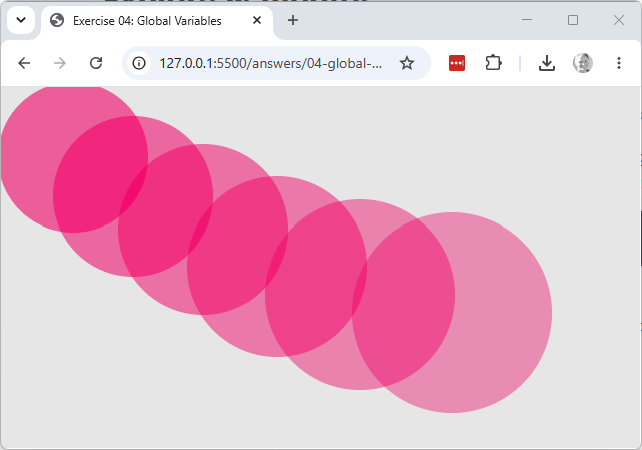

Working copy: exercises/04-global-variables/.
Modify the sketch so that each circle drawn is 10 pixels larger in diameter than the last one, and 10 less opaque — clicking repeatedly should build up a stack of circles that grows and fades as it goes.
Hint: diameter and opacity are declared const, which can't be reassigned — change both to
let first. Then, inside mousePressed(), after drawing the circle, update each variable
with a line like:
diameter = diameter + 10;This reads the current value of diameter, adds 10 to it, and assigns the result straight
back into diameter — the same assignment statement from earlier in this lesson, just with the
variable appearing on both sides of the =.
